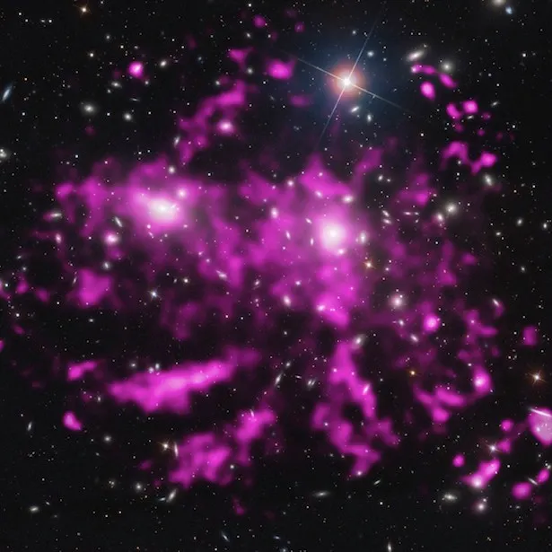
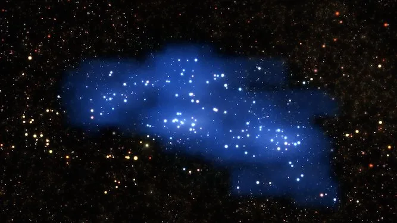

Gugus Galaksi
Sebuah gugusan galaksi (bahasa Inggris: galaxy cluster) adalah suatu struktur yang terdiri dari ratusan sampai ribuan galaksi yang terikat bersama oleh gravitasi dengan rentang tipe massa mulai dari 1014–1015 massa matahari. Gugusan galaksi merupakan struktur ikatan gravitasi terbesar di alam semesta dan diyakini sebagai struktur terbesar yang dikenal di alam semesta sampai tahun 1980-an, ketika gugusan super (supercluster) ditemukan. Salah satu ciri utama gugusan adalah intragugusan medium (intracluster medium atau ICM). ICM terdiri dari gas yang dipanaskan antara galaksi dan memiliki suhu puncak antara 2-15 ke-V yang tergantung pada total massa gugusan. Gugusan galaksi berbeda dengan gugusan bintang, seperti gugusan terbuka, yang merupakan struktur dari bintang-bintang dalam galaksi, atau dengan gugus bola, yang biasanya mengorbit galaksi. Agregat kecil dari galaksi-galaksi disebut sebagai kelompok galaksi daripada gugusan galaksi. Kelompok dan gugusan dapat bergabung bersama-sama untuk membentuk gugusan super.
Gugusan galaksi yang terkemuka dalam alam semesta yang relatif dekat adalah Gugusan Virgo, Gugusan Fornax, Gugusan Hercules, dan Gugusan Coma. Agregasi yang sangat besar dari galaksi dikenal sebagai Penarik Raksasa (Great Attractor), didominasi oleh Gugusan Norma, cukup besar untuk memengaruhi ekspansi lokal alam semesta. Gugusan galaksi yang terkemuka dengan jarak yang jauh, alam semesta pergeseran merah tinggi (high-redshift universe) termasuk SPT-CL J0546-5345 dan SPT-CL J2106-5844, gugusan galaksi yang paling besar yang ditemukan di alam semesta awal. Dalam beberapa dekade terakhir, mereka juga diketahui dapat menjadi lokasi yang relevan dari percepatan partikel, sebuah fitur yang telah ditemukan dengan mengamati penyebaran emisi radio nontermal, seperti radio halo dan radio relic. Dengan menggunakan Observatorium sinar-X Chandra, struktur seperti front dingin dan gelombang kejut juga telah ditemukan di banyak gugusan galaksi.
Gugus Galaksi Virgo

Gugus galaksi Virgo memiliki anggota mencapai 2.000 galaksi yang tersebar di beberapa grup galaksi. Gugus Galaksi Virgo berpusat di rasi bintang Virgo yang berjarak sekitar 59 juta tahun cahaya. Salah satu galaksi terbesar dan paling terang yang ada di Gugus Galaksi Virgo adalah galaksi elips raksasa yang disebut Galaksi Messier 87. Galaksi ini berjarak sekitar 53,4 juta tahun cahaya dari Bumi.
Supergugus Galaksi
Gugus galaksi berkumpul di suatu tempat hingga membentuk supergugus galaksi sekaligus merupakan struktur terbesar yang ada di alam semesta. Supergugus memiliki jutaan galaksi di dalamnya yang membentang dengan jarak lebih dari 100 juta tahun cahaya. Gugus Galaksi Virgo berada di supergugus yang disebut Supergugus Galaksi Laniakea. Supergugus ini ditemukan pada bulan September 2014 lalu oleh sekelompok astronom dari Universitas Hawaii. Nama Laniakea sendiri berarti langit mahaluas, yang diambil dari bahasa Hawaii lani yaitu langit dan akea yaitu luas atau sangat luas.